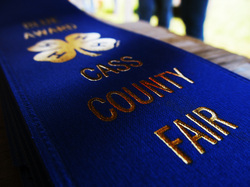
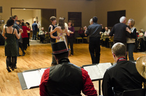
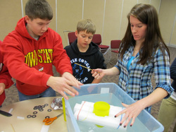

_4-H
_I
have been actively involved in 4-H since 3rd grade, serving in a
variety of roles from club president to State Council member and State
Youth Tech Team mentor. 4-H has inspired me to serve in a variety of
ways. My first large initiative-based project was to organize painting
and refurbishments on the Cass County Fairgrounds, mobilizing community
members to provide over 100 man-hours of volunteering. I have
served as a Jr. Fairboard member on the Cass County Fairboard,
volunteering over 80 hours in one week towards the success of the fair.
I organize a variety of workshops for 4-H youth, focusing on topics
from photography to résumé creation. I currently serve as a mentor and
assistant on the Iowa 4-H Youth Tech Team.
Each summer I volunteer for several days at the Iowa State Fair,
generally in a tech support capacity in the 4-H building. I also
volunteer my time each month to the service projects sponsored by the
ISU chapter of Collegiate 4-H. I have recently completed a 4-H judge's training session and am very excited to begin judging county fairs in Iowa, Missouri, and Kansas this summer.
_Tau Beta Sigma
_TBΣ
is a national honorary band sorority (it's coed) that serves collegiate
bands. I have a long history of involvement in music and active
engagement in serving the ensembles in which I participate. I dedicate
dozens of hours to serving the bands at Iowa State as a member of TBS:
Our service activities range from organizing materials for the marching
band, sponsoring social activities for band members, performing at
assisted care facilities, and interacting with beginning musicians at a
local elementary school.
_Community Music
_As
an active musician, I believe that sharing my talent with the community
is a valuable and rewarding use of my time. Many capable musicians
don't share their gift with those around them, so I have taken the
initiative to facilitate community performances in a variety of mediums
in the last several years.
Caroling: Each December I organize various groups of instrumental caroling ensembles to play primarily at assisted care facilities, including low brass choirs, sax quartets, and mixed ensembles. Since 2008 I have organized over 35 performances.
Sax quartet: As a freshman at ISU I formed what was jokingly known as The "Official" ISU Rock 'em Sock 'em Sax Quartet, a group of non-music-major saxophonists that play for the joy of the music. We rehearsed weekly and performed at five volunteer gigs over the course of 18 months.
Caroling: Each December I organize various groups of instrumental caroling ensembles to play primarily at assisted care facilities, including low brass choirs, sax quartets, and mixed ensembles. Since 2008 I have organized over 35 performances.
Sax quartet: As a freshman at ISU I formed what was jokingly known as The "Official" ISU Rock 'em Sock 'em Sax Quartet, a group of non-music-major saxophonists that play for the joy of the music. We rehearsed weekly and performed at five volunteer gigs over the course of 18 months.
_Big Band Dances
Holiday Ball 2011. Photo copyright Doug Auerbach.
_While
this falls under the category of "community music," I have devoted
enough time to it that I feel it warrants its own heading. Since 2010 I
have organized five free community big band dances in Atlantic, Iowa. At
each dance I lead a live, 20 piece jazz band (named Popcorn Button)
playing traditional big band music while dancers enjoy the open dance
floor. Jake and Pam Auerbach, two local ballroom dancers, have assisted
me with these dances, and lead free ballroom dance lessons during the
event. I believe that ballroom dancing is a very fun and rewarding sport
that anyone can do. We encourage everyone to give it a shot at our
dances and provide the opportunity for the community to engage in
dancing, music, and socializing. The band is entirely volunteer-based,
and is mainly comprised of local high school alumni and community
members. For each dance I write press releases (with graphics by Doug Auerbach),
coordinate rehearsals, maintain and update our growing music library,
and play alto sax in the band (in addition to leading it). We have
enjoyed great popularity within the community, hosting growing audiences
of well over 100 attendees at each dance. Admission will always be free
(we do accept free will donations at the door to cover event costs), as
I believe these events are part of what makes communities strong. I
plan on organizing these dances for as long as I can reasonably return
to the area. More information about the band and events can be found at Popcorn Button's website.
_Workshop Coordinator
Designing efficient boats.
_I
believe that it is valuable to spark an interest in technical fields in
youth as early as possible. I have organized workshops independently
with the goal of educating youth on their options within the realm of
engineering and showing them some of the possibilities available to them
in technical fields.
Exploring Engineering: I contacted an instructor for Toying with Technology, a course that teaches students how to educate kids about various technological concepts, about setting up a workshop in my hometown targeted at kids with any interest in engineering. Based on the course materials available, I settled on two projects: Miniature boat design and the chemistry of homemade ice cream. I brought in engineering students from ISU and Purdue that were high school alumni from the area to discuss their experiences with attendees and answer any questions.
Application Extravaganza: I worked with local ISU Extension staff to put on a workshop with the goal of helping students prepare resumes and scholarship applications. January 2012 marks the second annual occurrence of the event.
Programming Demo: As an alumni of Atlantic High School, I knew that the curriculum offers no introduction to programming, so I created a workshop with the goal of demonstrating what programming is and an example of what can be done with it. I used PlayMyCode.com, a website that allows simple in-browser game development, to demonstrate basic programming concepts and code manipulation. I brought a member of TEAM, The Engineering Ambassador and Mentor program from ISU to answer questions about any engineering department. I used with workshop again with the Iowa 4-H Youth Tech Team, and am currently revamping it to demonstrate programming Pong from the ground up, both in Scratch and Quby (PlayMyCode's language).
Computational Thinking: I have developed and collected a variety of activities with the goal of introducing youth to computational thinking and getting them excited about math, science, computer science, and engineering. I do these activities regularly with the Iowa 4-H Youth Tech Team and other groups as I get the opportunity. We cover topic such as information theory, Java, basic programming, algorithm development, and the software lifecycle.
Exploring Engineering: I contacted an instructor for Toying with Technology, a course that teaches students how to educate kids about various technological concepts, about setting up a workshop in my hometown targeted at kids with any interest in engineering. Based on the course materials available, I settled on two projects: Miniature boat design and the chemistry of homemade ice cream. I brought in engineering students from ISU and Purdue that were high school alumni from the area to discuss their experiences with attendees and answer any questions.
Application Extravaganza: I worked with local ISU Extension staff to put on a workshop with the goal of helping students prepare resumes and scholarship applications. January 2012 marks the second annual occurrence of the event.
Programming Demo: As an alumni of Atlantic High School, I knew that the curriculum offers no introduction to programming, so I created a workshop with the goal of demonstrating what programming is and an example of what can be done with it. I used PlayMyCode.com, a website that allows simple in-browser game development, to demonstrate basic programming concepts and code manipulation. I brought a member of TEAM, The Engineering Ambassador and Mentor program from ISU to answer questions about any engineering department. I used with workshop again with the Iowa 4-H Youth Tech Team, and am currently revamping it to demonstrate programming Pong from the ground up, both in Scratch and Quby (PlayMyCode's language).
Computational Thinking: I have developed and collected a variety of activities with the goal of introducing youth to computational thinking and getting them excited about math, science, computer science, and engineering. I do these activities regularly with the Iowa 4-H Youth Tech Team and other groups as I get the opportunity. We cover topic such as information theory, Java, basic programming, algorithm development, and the software lifecycle.
_One Heart Equestrian Therapy
_One
Heart is an organization located in Ames, Iowa that provides therapy to
individuals with a variety of mental and physical disabilities using
horses. I have volunteered over 40 hours at One Heart directly assisted
patients, as well as bringing in several new volunteers to the
organization.